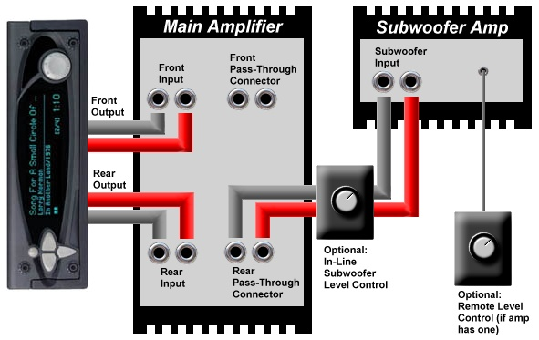
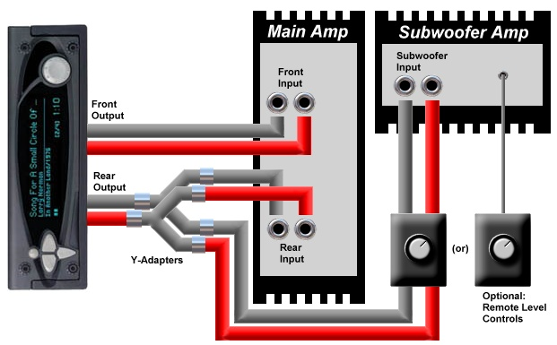

· How do I run a subwoofer if the player doesn't have a subwoofer output?
(Entry last updated on January 11th, 2002)Even though the player doesn't have a separate dedicated output for a subwoofer, it's quite easy to hook one up. There are a few different ways to do it.
1) Through an aftermarket head unit:
If you have room in your dash for two DIN-sized stereos, you can use an aftermarket head unit with an Aux input and a subwoofer output, as shown:

There are some limitations to doing it this way, not the least of which is that the aftermarket stereo always looks gaudy and out-of-place in the dash when compared to the sleek-looking Rio Car. See here for more information on how this scheme works.
Note that there are also aftermarket equalizers and crossovers with dedicated subwoofer outputs. These would work in exactly the same way as pictured above, just imagine the CD receiver replaced with a picture of an equalizer.
Personally, I prefer to have the Rio Car as my only stereo, connected directly to the amplifiers. I dislike the complexity of a two-stereo system.
2) With pass-through connectors:
Some amplifiers have pass-through connectors, allowing you to daisy-chain multiple amplifiers easily. Some amplifiers have connectors for a remote level control, allowing you to change the level of the subwoofer even if your stereo does not have a dedicated output for a subwoofer. You can also install an in-line level control if the amplifier does not have one:

In this configuration, the subwoofer is part of the rear fader. When you fade the main speakers forward, you will also reduce the volume of the subwoofer. For some people, this is plenty of control over the subwoofer, and a dedicated subwoofer level control is not needed.
Note that if you're using a single 5-channel amplifier for this purpose (instead of a separate subwoofer amplifier), it might allow you to configure it this way internally. If not, it's still the same principle, you just daisy-chain the rear channels into the subwoofer inputs using a pair of short RCA cables.
3) Fader controls subwoofer only:
If you do not have remote subwoofer level controls, you can use the rear channel as a dedicated subwoofer channel, and daisy-chain your fronts into your rears with a short pair of RCA cables:

In this configuration, you lose the ability to fade front/rear between your main speakers, while the fader now controls the subwoofer level. For some people, this is fine. It depends on how you like to control the sound in the car. This happens to be the way I have my system configured. It is simple and it works very well once you've balanced the front/rear main speaker levels with the amp's onboard gain controls.
4) With Y-adapters:
If your system does not have pass-through connectors, you can do variations on the above schemes, but use Y-adapters instead of pass-through connectors:

Whether or not this works well is going to depend on your particular system. I, personally, never had any trouble when I used Y-adapters in this configuration. Some people will say that you might lose some of the level voltage on the split connection, but I never noticed any signal loss. There is also the possibility that this might induce a ground loop, but you run that risk any time you run separate/multiple amplifiers anyway. Each component you add to the system increases the odds that you'll cause a ground loop, so just watch out for it and deal with it accordingly.
|